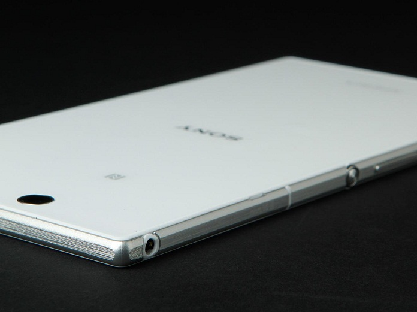

Sony Mobile. Sony Mobile is a multinational telecommunications company founded on October 1, 2001 as a joint venture between Sony and Ericsson, headquartered in Tokyo.
SONY
Japan and wholly owned by Sony. It was originally incorporated as Sony Ericsson, but Sony acquired Ericsson's share in the venture on February 16, 2012.
SONY
The Sony Xperia L1 is powered by 1.45GHz quad-core MediaTek MT6737T processor and it comes with 2GB of RAM. The phone packs 16GB of internal storage that can be expanded up to 256GB via a microSD card. As far as the cameras are concerned, the Sony Xperia L1 packs a 13-megapixel primary camera on the rear and a 5-megapixel front shooter for selfies.

SONY
The Sony Xperia L1 is a dual SIM (GSM) smartphone that accepts . Connectivity options include Wi-Fi, GPS, Bluetooth, NFC, Headphones, 3G and 4G.
SONY
❮
❯